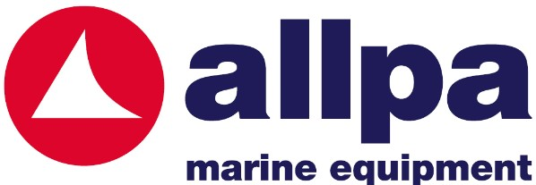
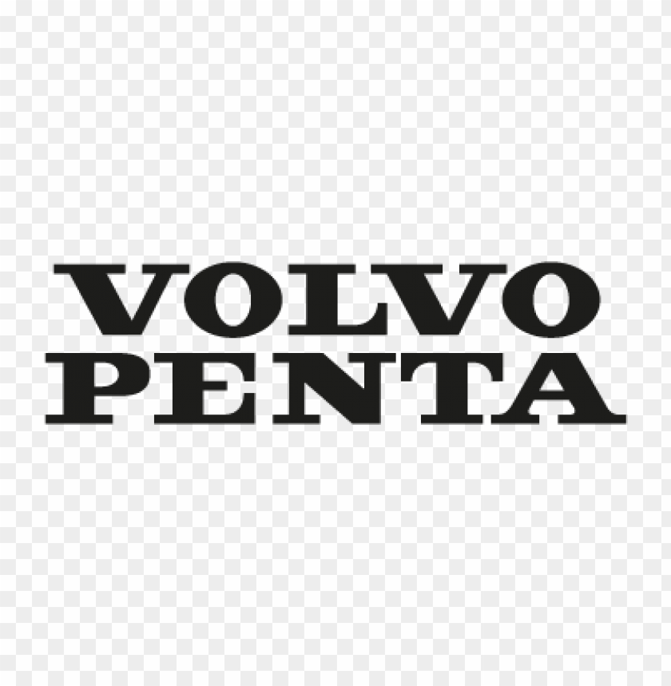
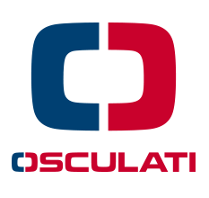

Service, Reparatur & Verkauf rund ums Boot
Reparatur und Wartung von Innen- und Außenbordmotoren aller Hersteller. GFK-Reparaturen, Umbauten und individuelle Anpassungen.
Neuanstriche, Aufarbeitung bestehender Antifouling-Schichten sowie professionelle Bootspflege für langfristigen Werterhalt.
• GFK-Angelboote
• Schlauchboote
• Zubehör & Trailer
• Vermittlung von Gebrauchtbooten & Motoren
• Bootstransport
• Aufbereitung
• Individuelle Services
Begrenzte Stellplätze verfügbar – bitte frühzeitig reservieren.
Wir führen Ersatzteile und Zubehör führender Hersteller.



Udo Eichhofer
Landrat-von-Laer-Str. 15a
47495 Rheinberg-Orsoy
Telefon: 02844 - 606
Telefax: 02844 - 1417
Mobil: 0173 - 272 90 95
E-Mail: info@eichhofer.de
www.eichhofer.de